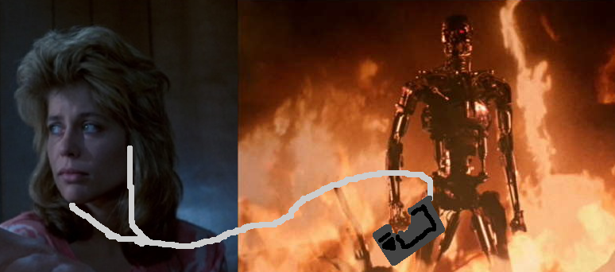

<link rel="import" href="../../bower_components/polymer/polymer.html">

<link rel="import" href="../../bower_components/gob-page/gob-page.html">
<link rel="import" href="../../bower_components/gob-content/gob-content.html">
<link rel="import" href="../../bower_components/gob-youtube/gob-youtube-video.html">

<dom-module id="gob-page-everyday-im-shufflin">
  <template>
    <style>
      :host {
        display: block;
      }
    </style>

    <gob-page title="[[title]]">

      <p><i>Now playing: Strunk, Die Antwoord</i></p>

      <p>
        Obviously, life requires a lot of music. And I'm pretty sure I'm not the only one who shovels every song into same playlist. Easier that way, isn't it? Toggle rand&amploop and let it snow. However, the thing with random playlists is that, most of the time, the next song will be just too irrelevant and you'll have to manually pick a song. It's like someone scratching your back, yet unable to follow the itch, so you have to give directions to find the right spot. And, you know, some people suck at scratching, really. [She responds with a gentle smack and the word "Ass" in her cutest voice.]
      </p>

      <p><i>Now playing: Psychedelic Jazz, Parov Stelar</i></p>

      <p>
        Data science is cool and I'll try to show you that as smoothly as possible. Playlist arrangement is surely a -first world- problem, but my goal is to use it as a thought experiment that can be visualized smoothly(as promised). Whatever, let's get started. Let's bring an end to the Era of Shuffled Playlists!
      </p>

      <gob-content>
        
      </gob-content>

      <p>
        Imagine a <i>robot</i>. Its only job is to control your music player and follow you wherever you go. Also, if you dare touching the music player, it will stop you no matter what. This robot knows its shit. However, you have some control over the robot, through <i>modules</i>. Think of module as some sort of chip. If you want change robot's behavior, you insert a module and robot behaves accordingly. Mind you, there is no such thing as <i>GiveBackMyMusicPlayer! Module</i>. Finally ,our robot comes with Shuffle Module installed, by default. [After a quick glance she argues, "You don't need a robot example, they'll understand anyways.", and deep down, he agrees with her. But the image of Sarah Connor chased by Terminator with a MP3 player amuses him. "That's movie material, right there." he says.]
      </p>

      <h4><i>*removes Shuffle Module*</i></h4>

      <gob-youtube-video id="DeCaHYUJbvM"></gob-youtube-video>

      <p>
        "Similarity" isn't the right the word, but it's the first word that comes to mind.
      </p>

      <p><i>*Angelica, Anathema*</i></p>

      <p>
        For example this song, Angelica, the first time I listened to this, I was with my lover. We were in her class, her head was on my shoulder, sharing her headphones with me. <i>[Emits a long, deep audible breath expressing sadness, relief, tiredness, or similar.]</i> Whatever. It is fascinating how a simple song can bring back the oldest of memories after all these years, lovers, girlfriends, fbs. It might not be
      </p>

      <h2>History Module</h2>

      <h2>Status Module</h2>

      <h2>Generalization Module</h2>

      <h2>Shuffle Module</h2>

      <p>
        <i>*Arkadaşım, Nejat Alp*</i>
      </p>

      <p>
        Buna sonra devam et.
      </p>

      <gob-youtube id="6uZK7vrgz4Q"></gob-youtube>

      <gob-share></gob-share>

      <gob-fb-comments></gob-fb-comments>

    </gob-page>

  </template>
  <script>
    Polymer({
      is: 'gob-page-everyday-im-shufflin'
    });
  </script>
</dom-module>
